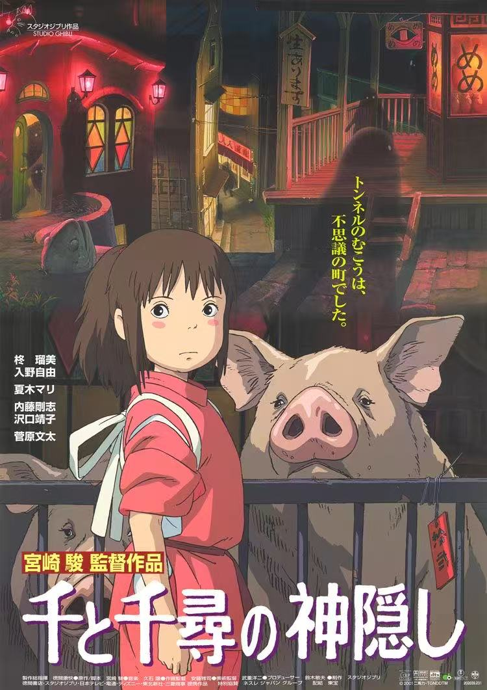

アニメとは？
アニメは日本発祥のアニメーション作品で、独自の表現手法と物語性が特徴です。単なる子ども向けエンターテインメントから、深い哲学的な作品まで、幅広いジャンルが存在します。

多彩なアニメーション表現出典：スタジオジブりの作品
アニメの主なジャンル
バトル・アクション
迫力のある戦闘シーンと成長物語が魅力。代表作：『鬼滅の刃』、『進撃の巨人』
日常・コメディ
日常生活を描いたほのぼのとした作品。心温まるストーリーが特徴。
ファンタジー
魔法や異世界を舞台にした作品。豊かな想像力で現実を超えた世界を表現。
ドラマ・恋愛
人間関係や感情の機微を深く描く作品。感動的なストーリー展開。
アニメの技術的特徴
映像表現の特徴
- 独特の作画スタイル：大きな目や誇張された表現で感情を強調
- 限られた動画枚数：効果的な動きで印象的なシーンを創造
- 色彩設計：感情や雰囲気を色で表現する「色指定」の技術
- デジタル技術の活用:3DCGと2Dアニメの融合
アニメの歴史と進化
1960年代
テレビアニメの始まり。『鉄腕アトム』が日本初の連続TVアニメ。
1980年代
OVAの登場。より大人向けの作品が制作されるように。
1990年代
世界的な人気の始まり。『攻殻機動隊』などが海外で評価される。
2000年代～現在
デジタル制作の普及。ストリーミングサービスの登場でグローバル展開が加速。
日本アニメと他国アニメの比較
| 特徴 | 日本アニメ | 西洋アニメ |
|---|---|---|
| 表現スタイル | 誇張された表情、感情表現 | リアル寄りの描写、物理法則重視 |
| ターゲット層 | 全年齢向け作品が多い | 子ども向けと大人向けが明確に分離 |
| 制作手法 | 限られた動画枚数での表現 | フルアニメーションが多い |
| 物語の深さ | 哲学的・複雑なテーマを扱う作品も多い | 娯楽性を重視したシンプルなストーリー |
アニメの文化的影響
「アニメは単なるエンターテインメントではなく、日本の現代文化を世界に発信する重要なメディアとなっています。」
世界への影響
- 世界的なアニメファンの増加
- コスプレ文化の広がり
- アニメスタイルのアートへの影響
- 日本の観光産業への貢献（聖地巡礼）
アニメ関連タグ
作画、声優、OP/ED、原作、制作委員会、演出、総作画監督、作監
アニメの未来
近年の技術革新により、アニメ制作は大きな変革期を迎えています：
- AI技術の活用:中間画の自動生成など
- 海外共同制作の増加:Netflixなどによる国際共同制作
- 配信プラットフォームの多様化：ストリーミングサービスの普及
- 多様な表現手法の模索:3DCGと2Dの融合、VRアニメなど
アニメは今後も技術的進歩と文化的影響力をさらに拡大していくことでしょう。